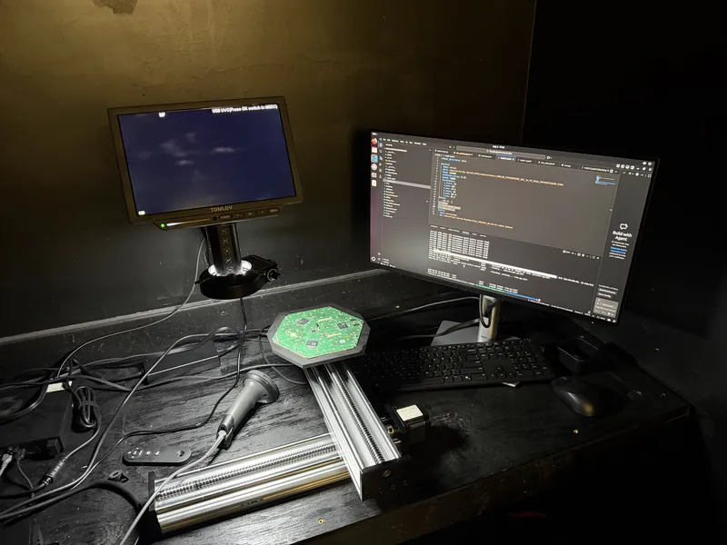
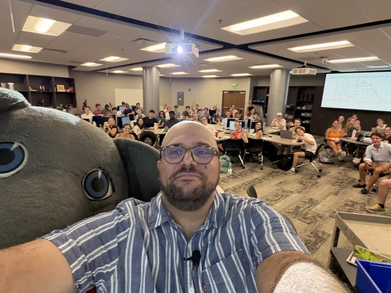
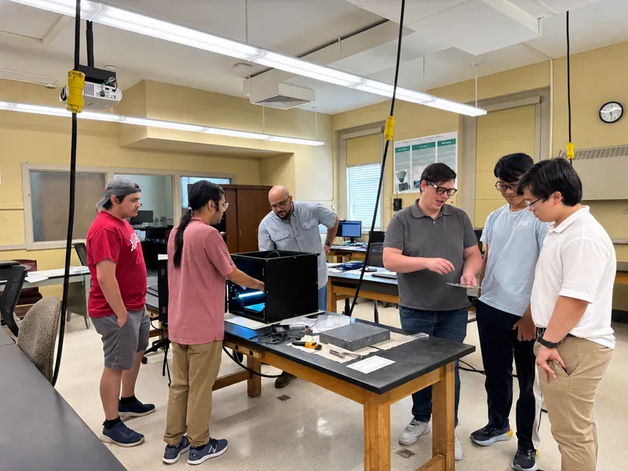
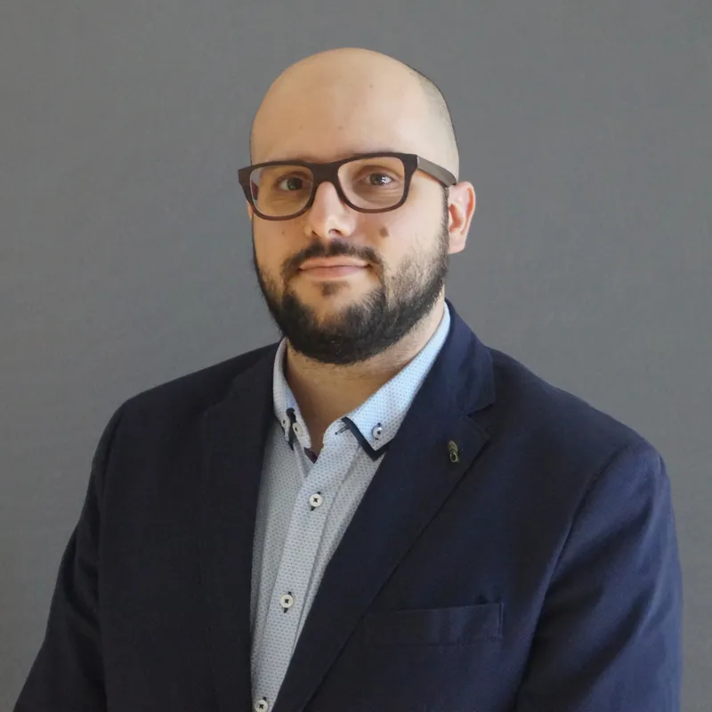

Experimental particle physics · CMS at CERN
Emanuele Usai
I use the top quark, the heaviest known elementary particle, to search for new physics at CERN’s Large Hadron Collider. My group also helps build new detector hardware for the upgrade of the CMS experiment and develops AI methods for particle physics.
Scroll to the overviewAt a glance
Paper and citation counts from INSPIRE, as of October 2026. CMS papers list the whole collaboration as authors; the ones I contributed to most are on the publications page.
What I work on

Research
The top quark as a tool for discovery
I search for new particles in collisions that produce top quarks, measure quantum properties of top quarks, and use AI to reconstruct collisions more accurately.
Research
Detector hardware
Building the CMS High Granularity Calorimeter
Our HGCAL lab at UA is in charge of quality control for about 10,000 hexagonal readout boards, or hexaboards, for the new calorimeter CMS is building for the High-Luminosity LHC.
Hardware
Teaching
Physics for a hundred students at a time
I teach calculus-based introductory physics to classes of about 100 students, as well as modern physics, classical mechanics and graduate seminars.
Teaching
Join the lab
Research opportunities for students
Who is in the group, what students work on, and how to apply as a graduate or undergraduate student.
Join the labAbout me
I am an experimental particle physicist on the CMS experiment at CERN and have been an Assistant Professor of Physics at The University of Alabama since August 2022. I studied physics at the University of Turin and earned my PhD summa cum laude at the University of Hamburg in 2017. My doctoral research, on the DESY campus, searched for heavy new particles that decay to top quarks.
From 2018 to 2022 I was a postdoctoral researcher at Brown University, and Fermilab’s LHC Physics Center named me a Distinguished Researcher in 2020 and 2021. From 2021 to 2023 I was a Level 2 manager in CMS, responsible for data quality monitoring and data certification for the whole experiment. At UA I lead the CMS HGCAL laboratory, which I set up in 2024. Since August 2026 I have been Level 3 convener of tt̄+X, the subgroup of the CMS Top Quark Physics group that studies top-quark pairs produced together with other particles.

News
- Invited colloquium at Mississippi State University: “Building the CMS High Granularity Calorimeter for the High-Luminosity LHC.”
- I began a two-year term, through August 2028, as Level 3 convener of the tt̄+X subgroup in the CMS Top Quark Physics group, following about 20 analyses.
- Nathan Nguyen, an undergraduate researcher in our HGCAL lab from 2024 to 2026, received the Randall Outstanding Undergraduate Research Award.
- Nathan Nguyen and Abhipsa Acharya became graduate students in my group. Nathan studies the production of four top quarks in events with two leptons of opposite charge. Abhipsa, whose 2024–2025 research project I co-supervised, searches for pair-produced T′ quarks, hypothetical heavy partners of the top quark.
- Our U.S. Department of Energy grant “Research in Elementary Particle Physics (Energy Frontier),” on which I am a Co-PI, was renewed through March 2029.
- Talk at LHCP 2025, the 13th Large Hadron Collider Physics Conference: “Recent Results on Searches with Boosted Tops (CMS).”
- I set up the UA CMS HGCAL laboratory, where we quality-control hexaboards for the CMS upgrade.
I’m recruiting graduate and undergraduate students
Graduate students in my group analyze CMS data, and undergraduates inspect and test detector boards in our HGCAL lab. Students in the group have presented talks and posters at APS and SESAPS meetings.
Contact
- eusai@ua.edu
- Office 321-A Gallalee Hall
Department of Physics and Astronomy
The University of Alabama
Tuscaloosa, AL